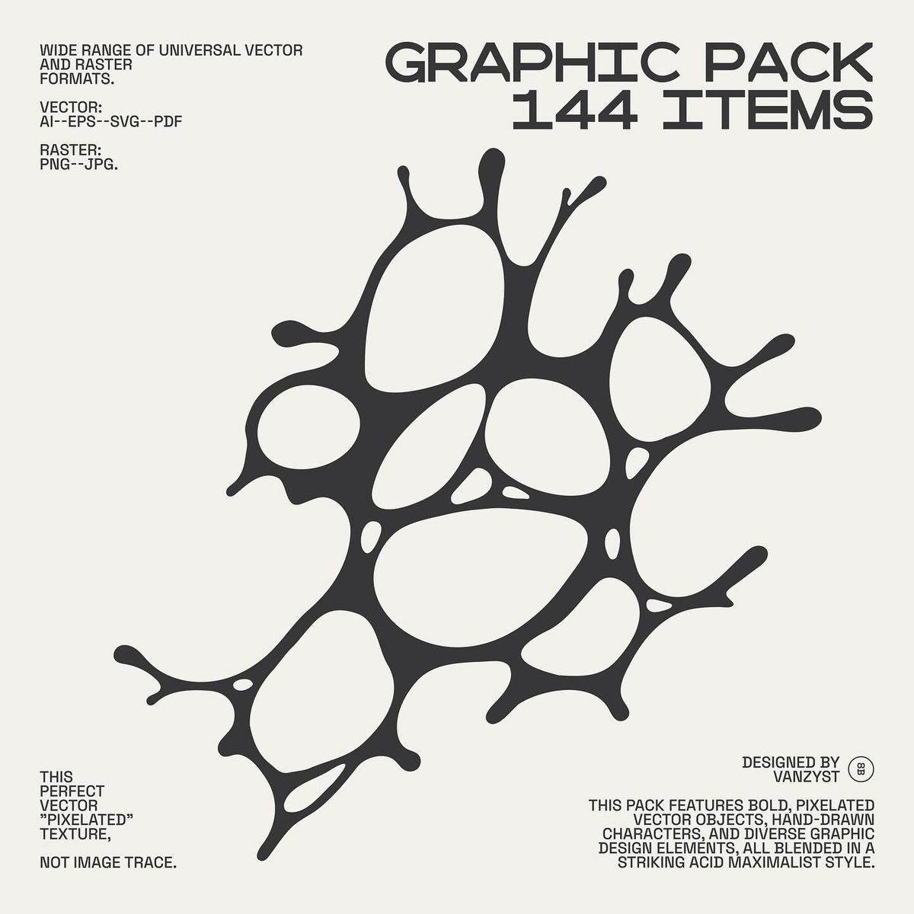
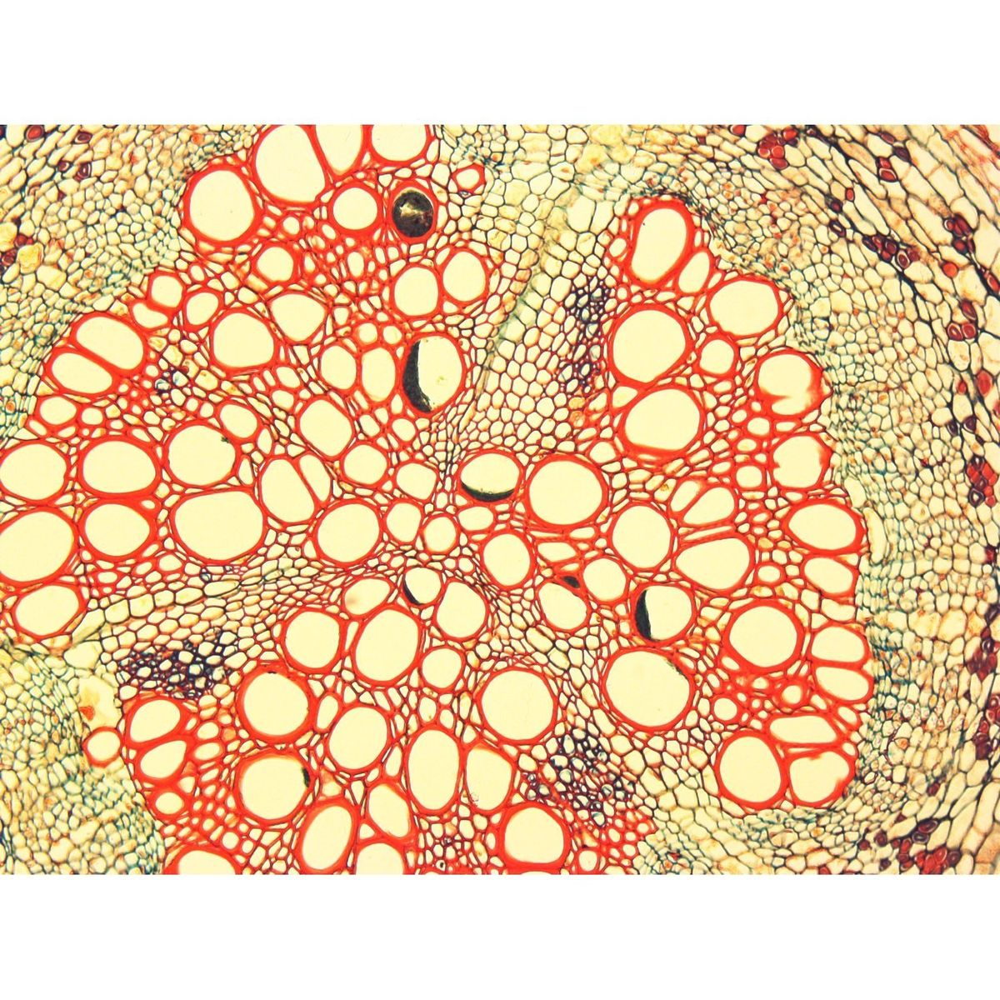
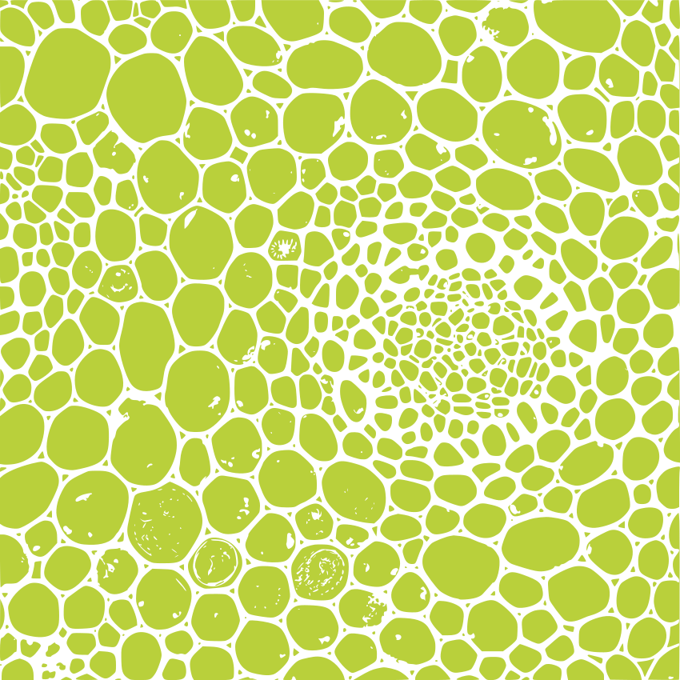
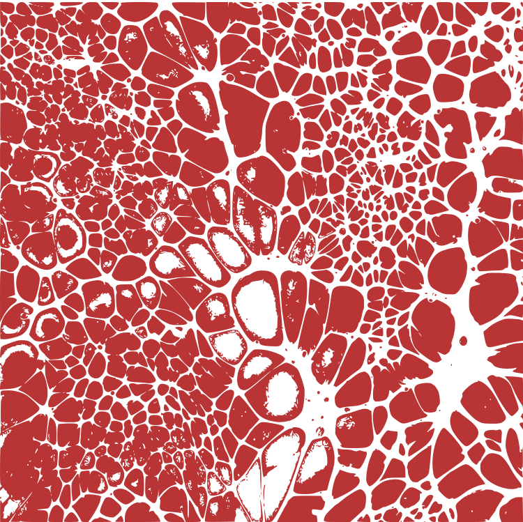
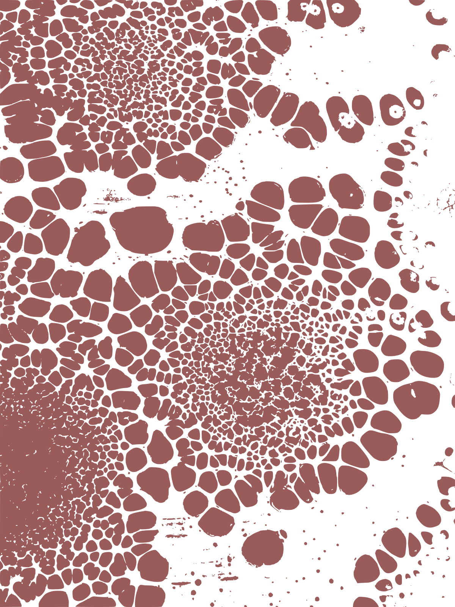
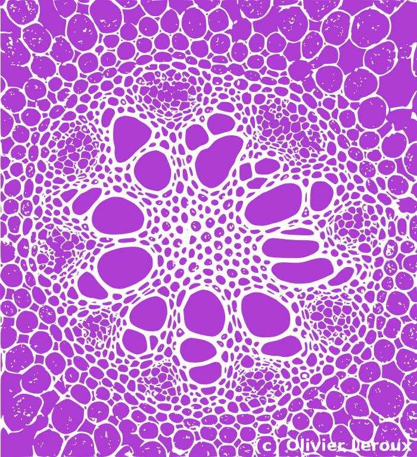

Andrea — four visual-language motifs from your canon canvas. Each block has a short role, reference inspo, and (for tissues) a working area with seeded procedural previews plus an archive for parked experiments.
Inspo thumbnails load from assets/motif-inspo/ (copies of the canon files under projects/branding/*/…) so they still work when you run python3 -m http.server from preview/; see assets/motif-inspo/README.md for the source map.
Context: phase0-decisions · DESIGN.md §5 (spec may still describe older roles — this page is the working view).
Symbiotic Organism
Role: A composite motif — it brings Neural Networks (relational structure),
Flows (movement and rhythm), and Tissues (organic, layered surface) together as one symbiotic whole.
Think “single living visual” that reads as network + motion + soft organic matter at once, not three separate decorations.
Role: Organic, low-contrast texture and layering — soft surfaces, membranes, depth without hard geometry.
Supportive background language; pairs with the network and flow reads inside the symbiotic composite.

tissues/2643eed4…jpg

tissues/df3c2bff…jpg

SVG · tissues/image 1.svg

SVG · tissues/image 2.svg

SVG · tissues/image 3.svg

SVG · tissues/image 4.svg
Polygon mesh: Voronoi cells filled as lumens; walls stroked on mesh edges. Hotspots seed macro lumens + growth; patch extent = BFS on the cell graph (no hull mask). Outer boundary = exposed facets only. Click add hotspot · drag move · Shift+click remove. Colors from Colors.
Archive — clipped texture blobs
Parked idea: rasterized texture inside <clipPath> blobs. Not the current direction — kept here for comparison. Single asset for production → merge clip + art in Illustrator/Figma.